An Excruciatingly Detailed Guide To SSH (But Only The Things I Actually Find Useful)
Oh you like SSH? Name every flag.
Published: August 22, 2023
Reading Time: 15 minutes
Welcome
We’ve all seen these great diagrams of how SSH port forwarding works but if your brain is anything like mine, these diagrams leave you with a lot of unanswered questions. If you’re on a red team, understanding how to traverse a network better than the people who designed it gives you immense power to do evil things. SSH is such a powerful tool but sometimes the syntax and other concepts can get in the way of us accomplishing our goals. In an effort to do more evil things in a timely fashion I’ve put together a massive list of SSH things that I find useful. You can read it too, but if I’m being honest, this is mostly for me. I’ve learned that I really don’t grasp concepts unless I have hands on keyboard time doing them. This post is essentially just everything I learned while doing so. Also I should point out that in all of these examples I am using a websever to demonstrate port forwarding but this can be done with almost any service including RDP, SQL, etc.
{kind=link}
Local Port Forwarding (-L)
Like the name implies, local port forwarding allows you to create a local port that is forwarded to a remote port. Let’s assume that the server internal-web.int is hosting a webpage that is only accessible on the loopback interface. This means that in order for us to access that webpage, we must be on internal-web.int. One way that we can get around this is by using an SSH local port forward. Assuming we SSH access to internal-web.int, on the host machine campfire.int, we can create a local forward that will allow us to access the remote webserver via a local port.
The command to do this is: ssh -N -f -L 1337:127.0.0.1:80 root@internal-web.int. This command is ran on campfire.int. That’s a complicated command, as always, breaking it down by flag will allow us to figure out what exactly is happening.
-N: This lets SSH know that we’re not going to be sending any commands after the server. Without this we’d get a shell onroot@internal-web.int-f: This sends SSH to the background. If we didn’t do this, our terminal would hang and we wouldn’t be able to use it.-LTells SSH to forward a local port1337:127.0.0.1:80: This tells SSH to bind the local port 1337 to the remote port of 80 (the port our webserver is on).
The best way I found to remember this is
-Lmeans local is on the left-hand side of the address.-Rmeans the local port is on the right-hand side of the address.
root@internal-web.intThis is telling SSH that we wish to login to the remote server as the root user to establish the SSH tunnel. Remember, port 1337 on our local machine is going to be bound to port 80 on the remote server.
Now that we have established the local port forward, we can interact with port 80 on internal-web.int by sending requests to port 1337 on our local machine( campfire.int).
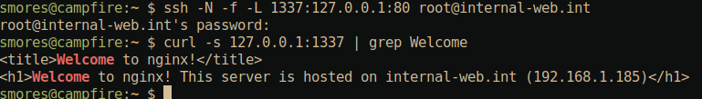
Remote Port Forwarding (-R)
Remote port forwarding is the opposite of local port forwarding.
Lets assume that we have access to internal-web.int and it is hosting a webpage that is only accessible on the loopback interface. Lets also assume that campfire.int cannot directly access internal-web.int. In this scenario we’d like to access internal-web.int from campfire.int. The problem is that we cannot directly communicate between campfire.int and internal-web.int due to a firewall. To get around this, we identify that vuln-server.int is reachable by both campfire.int and internal-web.int. The solution in this case is to use remote port forwarding SSH option to forward the port 80 from internal-web.int to an arbitrary port on vuln-server.int. Once we complete the remote port forward, we should be able to access the internal-web.int’s internal web page running on port 80 by issuing a curl command to vuln-server.int.
The command to do this is: ssh -N -f -R 3000:127.0.0.1:80 root@vuln-server.int.
-N: This lets SSH know that we’re not going to be sending any commands after the server. Without this we’d get a shell onroot@internal-web.int-f: This sends SSH to the background. If we didn’t do this, our terminal would hang and we wouldn’t be able to use it.-RTells SSH to forward a remote port3000:127.0.0.1:80: This tells SSH to bind the remote port 3000 to the local port of 80.
The best way I found to remember this is local forwarding with
-Lmeans local is on the left-hand side of the address. Remote forwarding with-Rmeans the local port is on the right-hand side of the address.
root@vuln-server.int: This is telling SSH that we wish to login to the remote server as the root user to establish the SSH tunnel. Remember, port 3000 (onvuln-server.int) is going to be bound to port 80 on this server.
Now that we have established the remote port forward, we can access port 80 on internal-web.int by sending a curl request to vuln-server.int:3000
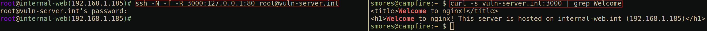
Dynamic Port Forwarding (-D)
Dynamic port forwarding with the -D option is an interesting option for proxying traffic over a SOCKS proxy. Lets assume that internal-web.int is hosting a web application that is only accessible on the internal network. We will assume that we have SSH access to vuln-server.int and it is on the same internal network and able to reach internal-web.int. What we would like to accomplish is accessing the webserver running on internal-web.int by proxying all of our traffic from campfire.int through vuln-server.int using both proxychains and our local web browser. First, we must ensure the /etc/proxychains.conf configuration file is set correctly.
Socks5: Tells proxychains to use socks5 (instead of socks4)127.0.0.1: Tells proxychains to use our localhost8080: Is the port we will use for our dynamic forward. This must match the port you specify with-Din your SSH command. 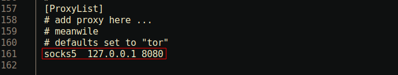
The command to do this is ssh -N -f -D 8080 root@vuln-server.int
-N: This lets SSH know that we’re not going to be sending any commands after the server. Without this we’d get a shell onroot@vuln-server.int-f: This sends SSH to the background. If we didn’t do this, our terminal would hang and we wouldn’t be able to use it.-D 8080Tells SSH to create a dynamic local port to send our traffic through.root@vuln-server.int: This is telling SSH that we wish to login to the remote server as the root user to establish the SSH tunnel so that we can proxy our traffic through it.
After creating the dynamic port forward over port 8080 and setting socks5 127.0.0.1 8080 in /etc/proxychains.conf, we can now run proxychains curl 192.168.1.185 and see our webpage hosted on 192.168.1.185. Additionally, DNS over SOCKS is hit or miss for me which is why I’ve used the IP address in the below curl command.
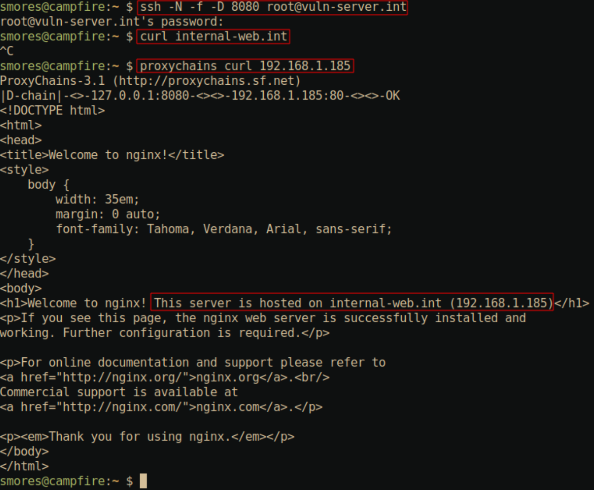
Next, we can configure Firefox to browse the internal web server via our SOCKS proxy by configuring the proxy settings within firefox itself. To get to the settings in firefox go to: Settings -> Privacy & Security -> Network Settings. Once there select Manual proxy configuration and check the “Proxy DNS when using SOCKS V5”. Finally, tell firefox about the SOCKS proxy we just set up by setting SOCKS host to 127.0.0.1 and the port to 8080 (Or whatever you set your port to in your SSH command).
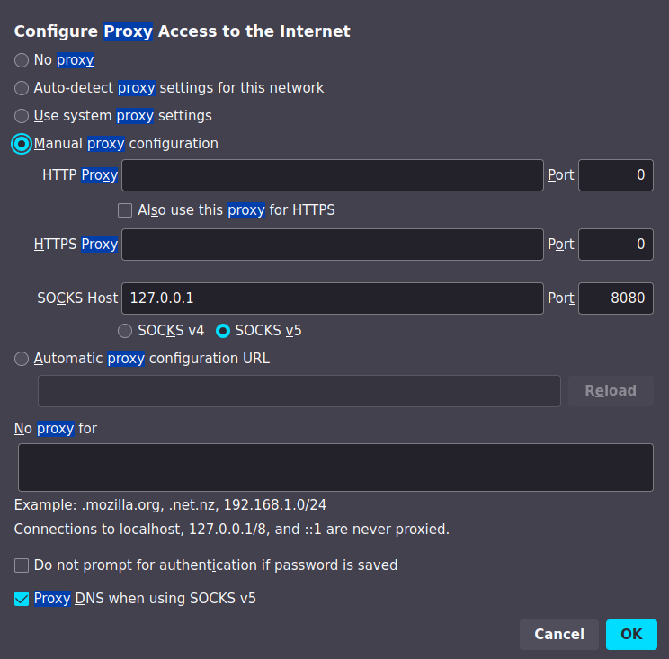
Now that we’ve set up our proxy, we can now access the webpage on internal-web.int since all of our traffic is being proxied from our local machine through vuln-server.int. Pretty cool.
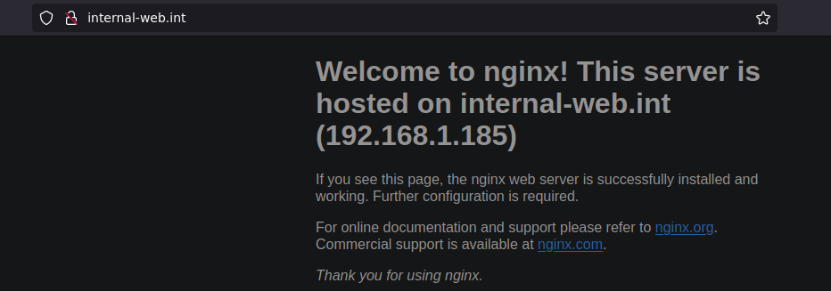
Jumphosts (-J)
Compared to the previous commands, jumping through hosts with SSH is fairly straight forward. In this scenario we will proxy our traffic through two hosts to reach a destination host that is not reachable by our current host campfire.int. Our jump chain will look like this: campfire.int -> vuln-server.int -> internal-web.int -> dns.int.
The command to do this is ssh -J root@vuln-server.int,root@internal-web.int root@dns.int. Note that multiple jumps are separated by commas.
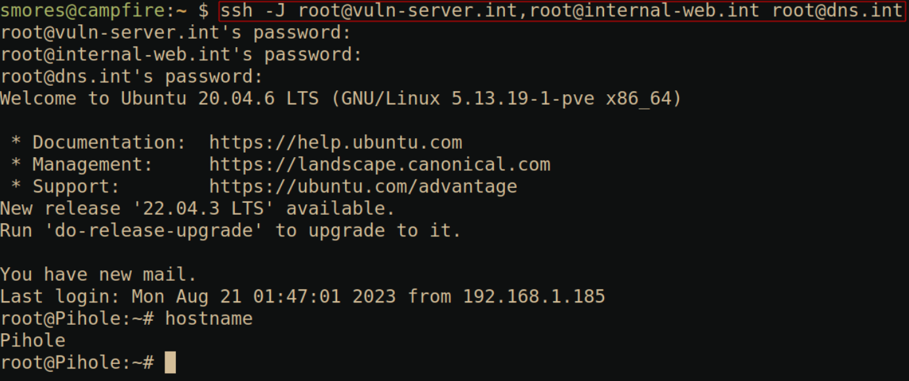
Agent Forwarding (-A)
SSH Agent forwarding is an interesting concept that I’ve written about about in my post Zero Effort Private Key Compromise: Abusing SSH-Agent for Lateral Movement which I encourage you to read if you’re considering using agent forwarding. To summarize that post, The SSH agent allows you to add private keys/identities to the agent running on your local machine using ssh-add <private_key_file>. These keys can then be listed with ssh-add -l. After adding a key to the ssh-agent utility, you can then SSH to a server using the key without having to re-enter the password. This is useful for both humans and service accounts. The -A option allows you to forward your key agent to the machine you’re connecting to, allowing you to use your private keys from the machine you’re connected to. Again, if you want more information about this, check out my previous post on the topic as there are some security concerns with this.
To demonstrate this, lets assume we want to jump through vuln-server.int into internal-web.int while also forwarding the keys in our ssh-agent so that we can utilize them once on internal-web.int.
The command to do this is: ssh -A -J root@vuln-server.int root@internal-web.int
-ATells SSH to forward the keys in our SSH agent to the remote machineinternal-web.int-J root@vuln-server.intTells SSH to proxy our traffic throughvuln-server.intbefore accessinginternal-web.introot@internal-web.int: This is telling SSH that we wish to login to the remote server as the root user to establish the SSH tunnel.
As you can see, after executing ssh -A -J root@vuln-server.int root@internal-web.int, we can use ssh root@dns.int without having to specify a private key or enter any credentials. This is because our local machine campfire.int has the ssh key for dns.int loaded into the ssh-agent. We confirm this by running ssh-agent -l.
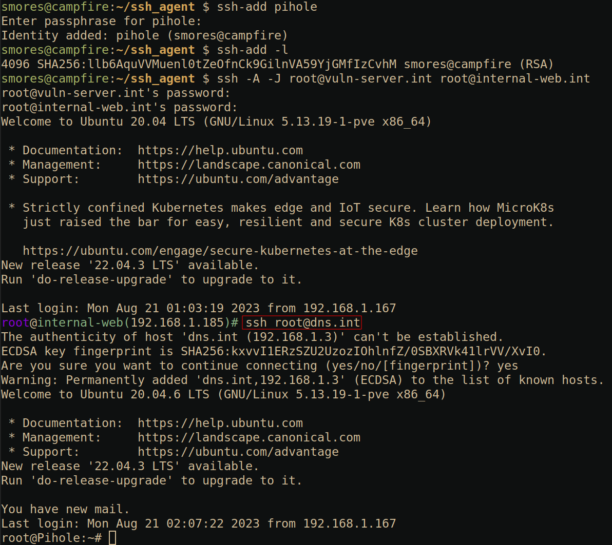
TTY Command Allocation (-t)
This option is super simple but very helpful for quickly running commands on a remote server that require some sort of interaction such as Vim or top. My favorite use case for this is when I need to quickly edit a file on a remote server. All you need to do is run the command ssh root@internal-web.int -t top and you will be greeted with a TTY containing the top command.
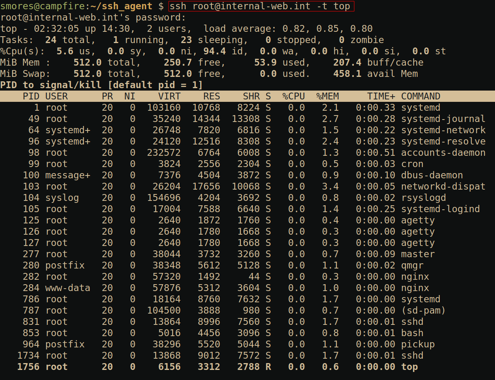
Global port (-g)
This one is a bit less common, but it allows us to define a locally forwarded port as a “global port” (my terminology, not official) that will allow us to proxy and traffic coming in on a local port to a port on an external server. This is similar to the -L option mentioned previously, but it will allow us to access the “Local” ports from an external machine. In the scenario below we have shell access to vuln-server.int and we would like to proxy any connection hitting port 2222 to port 22 on internal-web.int.
The command to do this is: ssh -N -f -g -L 2222:localhost:22 root@internal-web.int
-N: This lets SSH know that we’re not going to be sending any commands after the server. Without this we’d get a shell onroot@internal-web.int-f: This sends SSH to the background. If we didn’t do this, our terminal would hang and we wouldn’t be able to use it.-gThis tells SSH to allow remote hosts to connect to locally forwarded ports-LTells SSH to forward a local port
As you can see, even though our initial SSH command was to port 2222 on vuln-server.int, our shell tells us that we are actually on internal-web.int because of the ssh -N -f -g -L 2222:localhost:22 root@internal-web.int
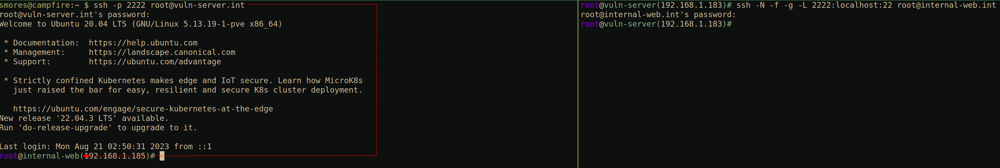
SSH Console (~?)
The SSH console is a “hidden” feature of SSH that allows you to exert some control over SSH without having to interact with the remote system. This is useful if you’re trying to control SSH itself but your shell is broken. To access the help menu for the console press ~?. If you’re familiar with vim, this is similar to using the leader character. This will bring up the help console. There are two options that I find very useful. First is the ~. option which will kill your session (very useful if you’ve broken something).
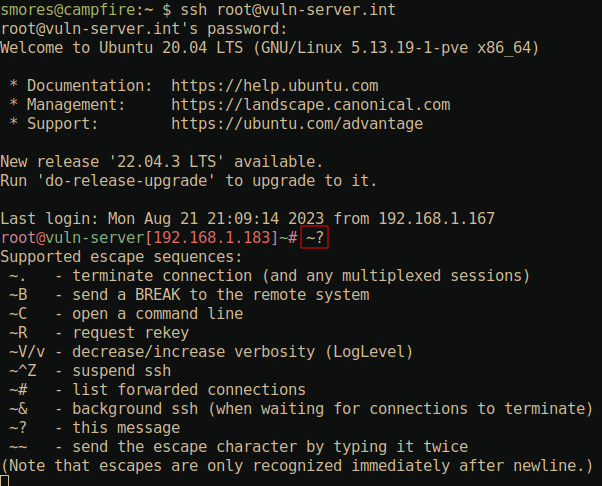
The second is the “Console” option which can be accessed with ~C. This console has a few options for forwarding. If you find that you’ve SSH’d into a server and would like to begin using this session as a port forward session (such as a dynamic forward with the -D option mentioned previously), you can forward this session with the -D 8080 option to create a forward-on-the-fly out of this session. In this example, I’ve connected to vuln-server.int via a normal ssh command. After pressing ~C and typing -D 8080 and pressing enter twice, a normal prompt is returned to me. However, upon utilizing proxychains on the host machine campfire.int (and ensuring the /etc/proxychains.conf file is set to use port 8080), we can utilize the SSH session as if we had initiated it using ssh -D. Nifty.
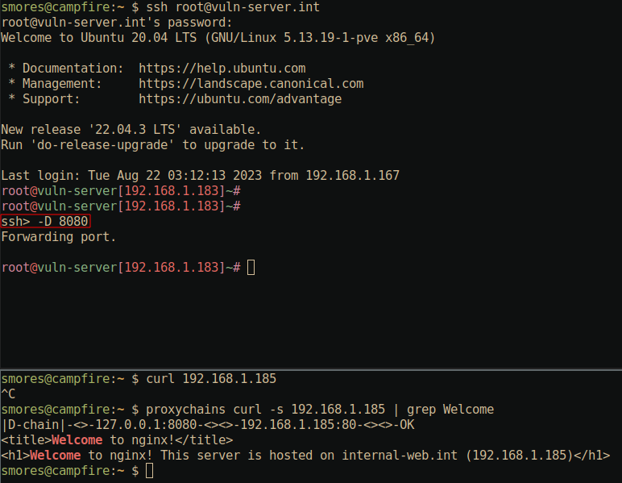
SSH Config
The SSH config file is located at ~/.ssh/config and can be utilized to save you time when making connections over SSH. The config file uses a very easy to follow syntax that allows you to save your SSH configuration instead of having to type out all the options you want in the command line each time. SSH will parse this file when making an SSH connection. If the server you’re connecting to has an configuration defined in ~/.ssh/config, it will use that configuration. Note that command line parameters take precedence over the configuration file. This means that if your ~/.ssh/config file says that the user for internal-web.int should be root, but you run the SSH command ssh graham@internal-web.int, SSH will attempt to log you in as graham, not root. Below is an example of a very basic ~/.ssh/config file.
1# You can put comments with a `#` at the beginning of the line only.
2host internal-web.int
3 User root
4 IdentityFile /home/smores/ssh_agent/internal-web-no-pw
5 Port 2222
The way SSH parses this file when running ssh internal-web.int is:
- It attempts to match
internal-web.intin the command line invocation with ahostkeyword matchinginternal-web.intin~/.ssh/config - If
internal-web.intis found in~/.ssh/config, any of the options under host will be utilized if they’re not specified in the command line invocation - If no match is found, SSH will only use options you’ve defined in your command line invocation of SSH.
SSH Config Keywords
There are many keywords you can utilize in your SSH config file but here are a few of the common ones I use that aren’t self explanatory (such as Port and User) .
-
IdentityFile /path/to/private_key: Allows you to specify the private key you wish to use for the host. Same as using-i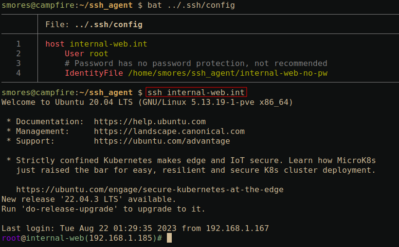 -
ForwardAgent: This is the same as runningssh -A(Once again, please see Zero Effort Private Key Compromise: Abusing SSH-Agent for Lateral Movement before using this.) 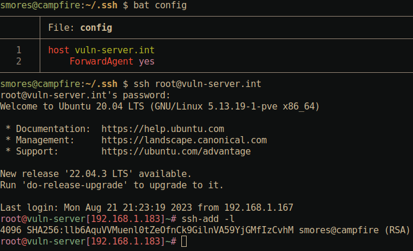 -
ProxyJump root@internal-web.int: Specify a server to proxy traffic through. Same as the-Joption mentioned above. Note that in the below example we are asked to authenticate toroot@vuln-server.int. This demonstrates that our traffic is indeed being routed throughvuln-server.intbefore giving us a shell oninternal-web.intlike we asked for in the SSH command. 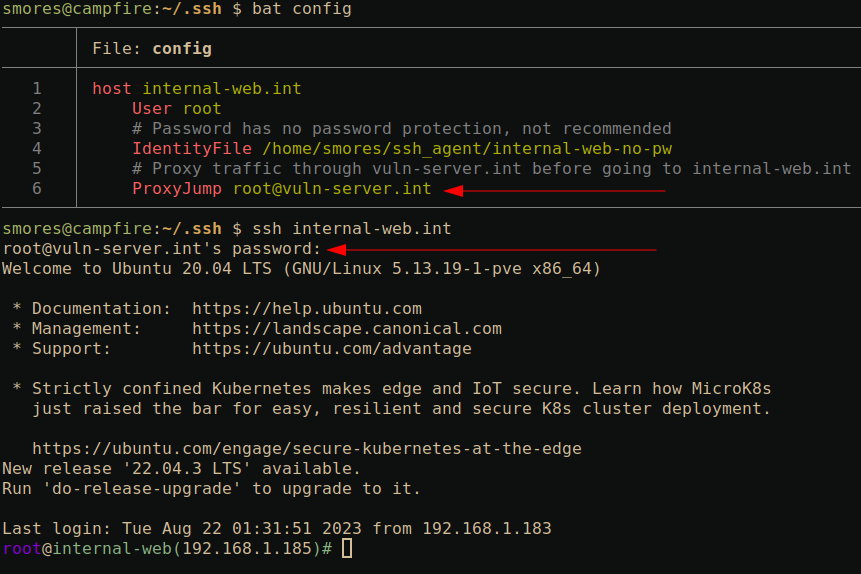 -
Match: This one is a bit more complex. TheMatchkeyword allows you to define conditions in your SSH config. In the below example, SSH executes the commandexport | grep PROXYME=TRUE. If the program returns with a status code of0(in this case, meaning grep found a match), it will utilize the SSH keywords defined under theMatchblock (In this case,ProxyJump). Otherwise only the normalhost internal-web.intblock is used.In the below example, we first run
ssh internal-web.intwhich successfully connects us to the server using the private key denoted with theIdentityFilekeyword. Sinceexport | grep PROXYME=TRUEreturns with a status code of1(meaning grep did not find a match), we do not execute theProxyJumpkeyword under the match statement.Next, we set the
PROXYMEenvironment variable toTRUEusingexport PROXYME=TRUEand re-run the samessh internal-web.int. This time we are asked to authenticate tovuln-server.intbefore we get a shell oninternal-web.int. This is because SSH evaluated theMatchblock and executedexport | grep PROXYME=TRUEwhich returned status code0(meaning grep found the match). Since it returned true, it executed theProxyJumpkeyword defined under theMatchblock. -
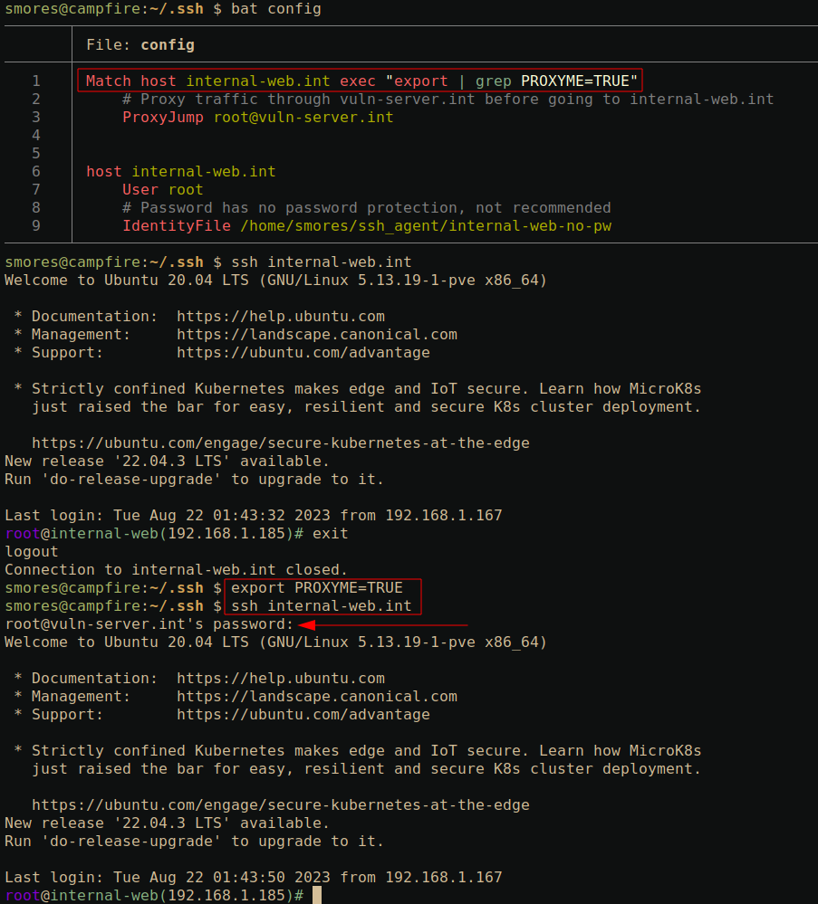
I should also point out that scp (and some other SSH based utilities) can use your SSH config file! Typically it does this by default, but I’ve had instances where it does not. If you’re on a system where scp does not automatically utilize your ~/.ssh/config file, you can explicitly define it with the -F ~/.ssh/config argument.
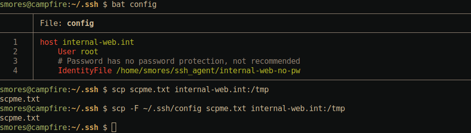
ssh-copy-id
The ssh-copy-id utility is a small tool that allows us to quickly upload our public key to a server.
The command to do this is: ssh-copy-id -i internal-web root@internal-web.int
-i internal-web: Specify the name of the private key we wish to use to authenticate and copy to the server.root@internal-web.intSpecify the server we wish to upload the private key to.
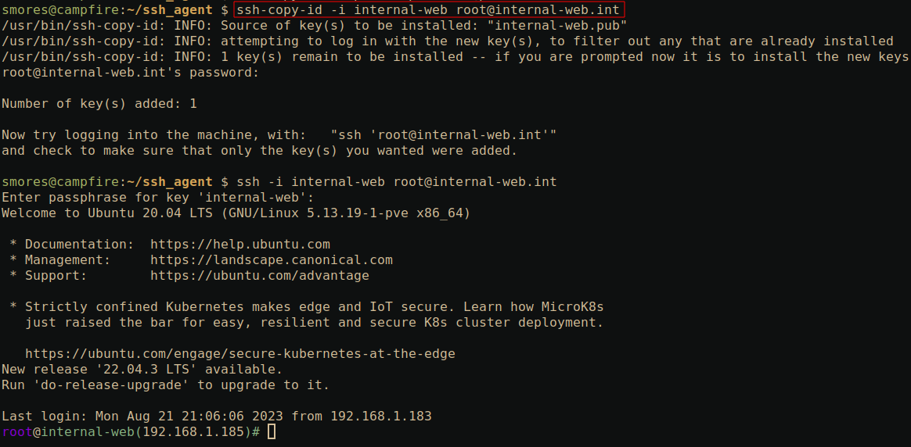
ssh-keygen
This utility is used to generate private/public key pairs. It is typically recommended that you specify a larger key size using the -b option. Although I’m not a crypto expert, longer is generally better and the default keysize is 3072 (At least on my machine). ssh-keygen defaults to RSA, however, other (preferably stronger) algorithms can be used by specifying the -t flag. IE ssh-keygen -t ecdsa -b 521 Additionally, you can inspect keys to see their fingerprint and byte size using ssh-keygen -lf <file-name>.
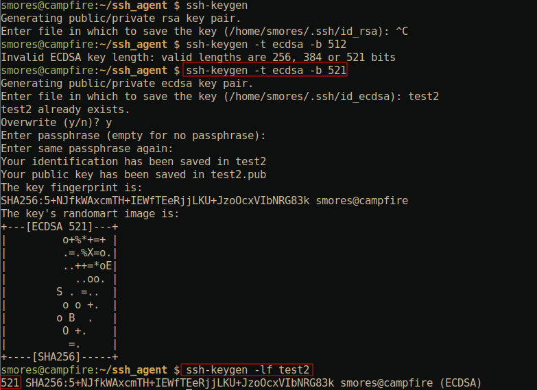
Wrapping up
So there you have it, my personal SSH cheatsheet for SSH. Go forth and SSH into machines like you know what you’re doing. If you have any questions, feel free to let me know on any of these sites or shoot me an email via blog[AT]grahamhelton.com.
References
https://github.com/cwolff411/redteamvillage-sshtunnels https://www.ssh.com/academy/ssh/tunneling-example https://goteleport.com/blog/ssh-tunneling-explained/ https://linuxize.com/post/how-to-setup-ssh-tunneling/ https://iximiuz.com/en/posts/ssh-tunnels/